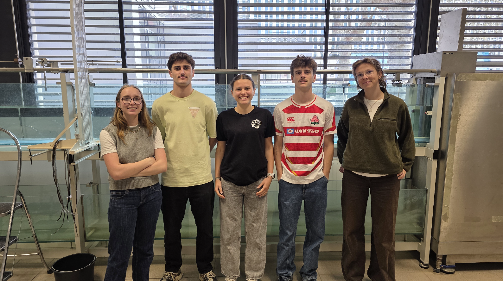

Hi, I'm Lucas Bony
1st year Engineering Student specializing in Fluid Mechanics, Energetics & Environment (MF2E) at ENSEEIHT (Toulouse, France).
Engineering Course
Overview of my scientific projects, fluid dynamics experiments, and technical skills developed during my engineering curriculum.
Featured Scientific Project
Scientific investigation into the world record flight of Patrick von Känel through a 152m horizontal tunnel. Analysis of aerodynamic forces, ground effect, energy conversion, and experimental testing in ENSEEIHT laboratories.
Key Methodologies & Achievements:
- Experimental Testing: Measured drag forces in a hydraulic channel using a balance and micro-propeller at ENSEEIHT.
- Aerodynamic Modeling: Evaluated ground effect, lift/drag coefficients, and velocity polars.
- Scientific Communication: Authored a detailed LaTeX report and delivered an oral defense in a group.

Technical & Soft Skills
Programming & Numerical Modeling
- Python (Data analysis & scripting)
- Fortran 90 (Scientific computing)
- SQL (Database management)
- LaTeX (Scientific editing)
Engineering & Thermal Software
- Pléiades COMFIE (Building thermal simulation)
- Emersus (LCA & RE2020 environmental compliance)
- MS Office Suite (Word, Excel, PowerPoint)
Soft Skills & Management
- Project management and teamwork
- Problem solving and critical thinking
- Communication orale et écrite
International Mobility
As part of the ENSEEIHT engineering curriculum, a minimum 17-week international experience is required to validate the degree.
Language Skills
French
- Native language
English
- Level B1 / B2
- Active progression during engineering studies
- Targeting C1 for international mobility
Spanish
- Level B2
- Good comprehension and conversational skills
Mobility Projects
Academic Semester or Internship in English-speaking Countries
To validate the mandatory 17-week international experience at ENSEEIHT, I plan to carry out a mobility period in the United Kingdom or the United States, either through an academic exchange semester or an engineering internship, in order to strengthen my English fluency and experience an international academic environment.
Gap Year Experience in Australia
I am considering a gap year in Australia to work on-site, discover another culture, and achieve complete language immersion in an English-speaking country.
Sustainability & Engagement
Overview of my civic commitments, environmental awareness workshops, and active participation in societal issues during my higher education.
Societal Awareness and Civic Engagement
Participation in interactive theater sessions designed to raise awareness on major societal issues in student and professional environments:
- La pièce « Le procès de King Kong » sur la prévention des violences sexistes et sexuelles (VSS) et du bizutage en contexte étudiant (suivie en 1ère année de prépa T² et en 1ère année à l'ENSEEIHT).
- Pièce interactive axée sur la gestion de soi et de son intégration en milieu professionnel (suivie en 2ème année de prépa T²).
Ecological Transition Workshops
La Fresque du Climat
- Collaborative workshop between students analyzing IPCC climate reports
- Understanding cause-and-effect chains in climate change
La Fresque des Frontières Planétaires
- Collaborative student workshop mapping the 9 ecological boundaries of the Earth system
- Analysis of ecological overshoot and systemic impacts
Field Actions and Local Events
Clean Walk à Toulouse
- School-organized waste collection initiative in Toulouse streets
Festival Futur Proche
- Annual attendance during Prepa T² and ENSEEIHT
- Workshops and presentations on current environmental challenges
Sport & Autres Activités
Personal development through sports, team activities, and student associations at N7.
Career Development
Key professional deliverables for the Self-Branding & Marketing module: